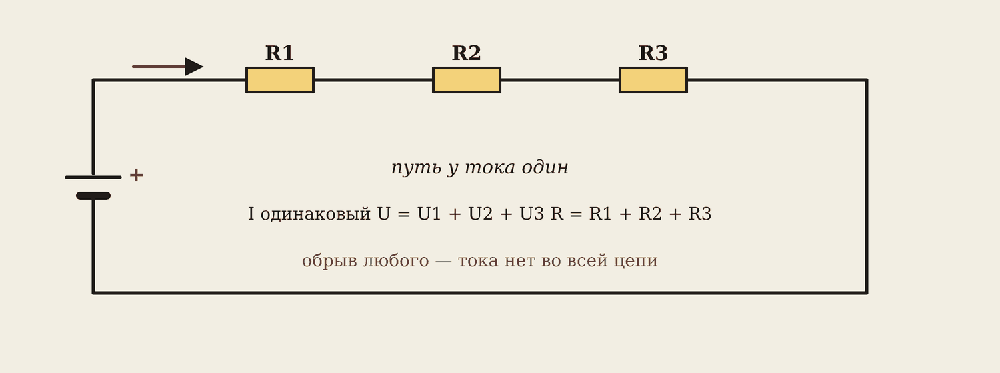
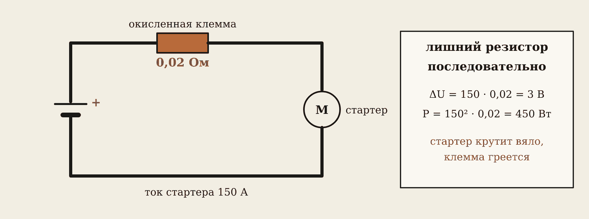
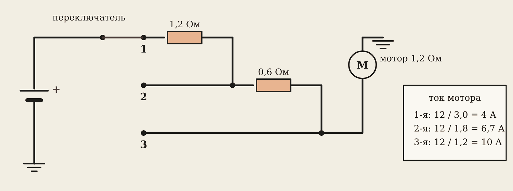
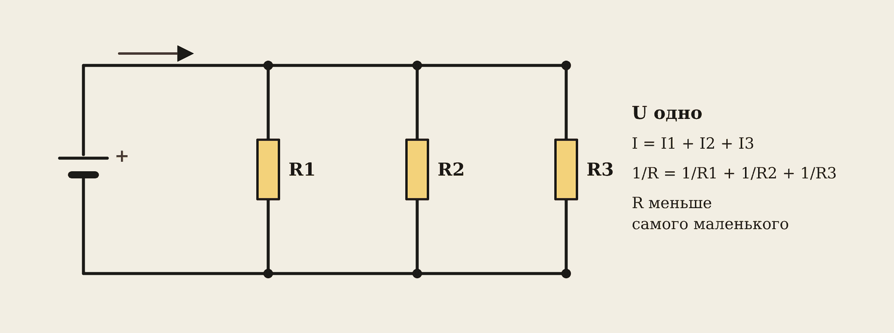
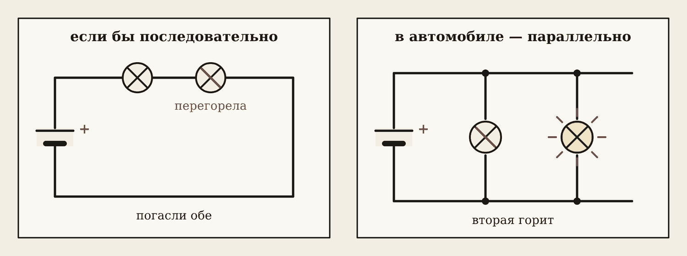
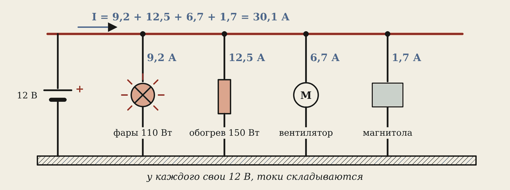

1. Последовательное соединение

Последовательно — элементы одной цепочкой, без разветвлений. Путь у тока один.
Запомните
Ток одинаковый: I = I1 = I2 = I3.
Напряжения складываются: U = U1 + U2 + U3.
Сопротивления складываются: R = R1 + R2 + R3.
Обрыв любого элемента — тока нет во всей цепи.
Напряжение делится пропорционально сопротивлениям: на большем резисторе — большее напряжение.
Лампа 2 Ом и провод 0,4 Ом последовательно, 12 В.
- R = 2 + 0,4 = 2,4 Ом.
- I = 12 / 2,4 = 5 А.
- На лампе U = 5 · 2 = 10 В, на проводе 5 · 0,4 = 2 В. Лампе досталось не 12, а 10 вольт — светит тусклее.
Окисленная клемма — лишний резистор

Окисел на клемме — это сопротивление, которое стоит последовательно со стартером. Всего 0,02 Ом, но при токе стартера 150 А:
- на клемме теряется ΔU = 150 · 0,02 = 3 В;
- выделяется P = 150² · 0,02 = 450 Вт тепла.
Стартер крутит вяло, клемма горячая. Лечится чисткой и затяжкой.
Скорости отопителя

Резисторный блок отопителя включён последовательно с мотором (1,2 Ом), переключатель обходит его части:
| Скорость | Сопротивление цепи | Ток |
|---|---|---|
| 1-я | 1,2 + 1,2 + 0,6 = 3 Ом | 12 / 3 = 4 А |
| 2-я | 1,2 + 0,6 = 1,8 Ом | 12 / 1,8 ≈ 6,7 А |
| 3-я | 1,2 Ом | 12 / 1,2 = 10 А |
Больше сопротивление — меньше ток — медленнее мотор. Лишнее напряжение уходит в тепло резисторов, их охлаждает поток воздуха. Оборвался резистор 1,2 Ом — не работает первая скорость: такая неисправность встречается часто.
2. Параллельное соединение

Параллельно — все элементы подключены к одним и тем же двум точкам.
Запомните
Напряжение одно: U = U1 = U2 = U3.
Токи складываются: I = I1 + I2 + I3.
1 / R = 1 / R1 + 1 / R2 + 1 / R3; для двух: R = R1 · R2 / (R1 + R2).
Общее сопротивление меньше самого маленького.
Почему в машине — параллельно

Если бы стоп-сигналы стояли последовательно, обрыв одной лампы гасил бы обе. Параллельно у каждой свой путь и свои 12 вольт: одна перегорела — остальные работают. Поэтому все потребители автомобиля включены параллельно: каждый получает полное напряжение и включается отдельно.

Чем больше включено, тем больше общий ток через аккумулятор, генератор и главный предохранитель:
Фары 9,2 + обогрев 12,5 + вентилятор 6,7 + магнитола 1,7 = 30,1 А. Напряжение у всех одно — 12 В.
Две фары по 2,6 Ом параллельно: ток одной 12 / 2,6 ≈ 4,6 А, общий 9,2 А, общее сопротивление 2,6 / 2 = 1,3 Ом.
Как выбрать предохранитель
- Сложите мощности потребителей на этой цепи: ΣP.
- Ток I = ΣP / 12.
- Номинал — ближайший из ряда 5; 7,5; 10; 15; 20; 25; 30; 40 А, не меньше 1,25 · I.
Фары 2 × 55 Вт = 110 Вт. I = 110 / 12 ≈ 9,2 А. 1,25 · 9,2 ≈ 11,5 А → предохранитель 15 А.
3. Итог: последовательно или параллельно
| Последовательно | Параллельно | |
|---|---|---|
| Ток | одинаковый во всех | складывается |
| Напряжение | складывается | одинаковое на всех |
| Сопротивление | R = R1 + R2, растёт | 1/R = 1/R1 + 1/R2, меньше меньшего |
| Обрыв одного | тока нет нигде | остальные работают |
| В машине | клемма, контакт, провод, резисторы отопителя | все потребители бортсети |
4. Домашнее задание
- Перепишите в тетрадь Т4 и Т5 и таблицу «последовательно — параллельно».
- Две задачи своего варианта: клемма и стартер (I, ΔU, P); набор потребителей (I, R, предохранитель).
- Лаборатория, вкладка «Проверь себя» — вопросы 7–12.
Словарик
- Последовательно — одна цепочка: ток одинаковый, напряжения складываются.
- Параллельно — общие две точки: напряжение одно, токи складываются.
- Делитель напряжения — два последовательных резистора: напряжение делится пропорционально сопротивлениям.
- Резисторный блок — резисторы последовательно с мотором отопителя для 1-й и 2-й скорости.
Эталоны в тетрадь
Перепишите в тетрадь по билетам — каждый эталон на отдельную страницу, с рисунком и строкой «Мой пример».
Последовательное соединение
Последовательное соединение резисторов: ток, напряжения, общее сопротивление. Окисленная клемма как лишний резистор.
- Последовательно — элементы одной цепочкой, без разветвлений. Ток один: I = I1 = I2 = I3.
- Напряжения складываются: U = U1 + U2 + U3. Сопротивления складываются: R = R1 + R2 + R3.
- Напряжение делится пропорционально сопротивлениям: на большем R — большее U. Обрыв любого элемента — тока нет во всей цепи.
- Окисленная клемма — лишний резистор последовательно со стартером: 0,02 Ом при 150 А «съедают» 3 В, стартер крутит вяло, клемма греется (450 Вт).
- Как проверить: вольтметр прямо на клемме и проводе под нагрузкой — на хорошем контакте падение меньше 0,1–0,2 В.
Параллельное соединение
Параллельное соединение резисторов: токи, напряжение, общее сопротивление. Почему потребители автомобиля включены параллельно.
- Параллельно — элементы подключены к одним и тем же двум точкам. Напряжение одно: U = U1 = U2 = U3.
- Токи складываются: I = I1 + I2 + I3.
- 1 / R = 1 / R1 + 1 / R2 + 1 / R3; для двух: R = R1·R2 / (R1 + R2). Общее сопротивление меньше самого маленького.
- Все потребители автомобиля включены параллельно к бортсети: у каждого свои 12 В, перегоревшая лампа не гасит остальные, каждый включается своим выключателем.
- Чем больше потребителей включено, тем больше общий ток через АКБ, генератор и главный предохранитель.
Проверь себя
Сначала ответьте сами — в тетради или вслух. Потом нажмите на вопрос, чтобы увидеть ответ.
1Резисторы 2, 3 и 5 Ом включены последовательно. Общее сопротивление?
2 + 3 + 5 = 10 Ом.
2Резисторы 6 и 3 Ом включены параллельно. Общее сопротивление?
6 · 3 / (6 + 3) = 2 Ом.
3Три ветки: 2 А, 3 А и 5 А. Общий ток?
10 А — токи складываются.
4Почему стоп-сигналы включены параллельно?
Обрыв одной лампы не гасит другую, у каждой полные 12 В.
5Окисленная клемма 0,02 Ом, ток стартера 150 А. Сколько вольт теряется на клемме?
ΔU = 150 · 0,02 = 3 В.
6Обогрев стекла 150 Вт и вентилятор 80 Вт на одном предохранителе. Какой номинал?
I = 230 / 12 ≈ 19,2 А, 1,25 · 19,2 = 24 А → 25 А.
Попробуйте в лаборатории
Откройте на телефоне или компьютере — ничего устанавливать не нужно.
Ответы к «Проверь себя»
- 2 + 3 + 5 = 10 Ом.
- 6 · 3 / (6 + 3) = 2 Ом.
- 10 А — токи складываются.
- Обрыв одной лампы не гасит другую, у каждой полные 12 В.
- ΔU = 150 · 0,02 = 3 В.
- I = 230 / 12 ≈ 19,2 А, 1,25 · 19,2 = 24 А → 25 А.